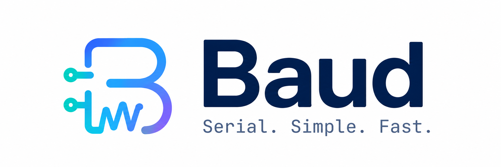
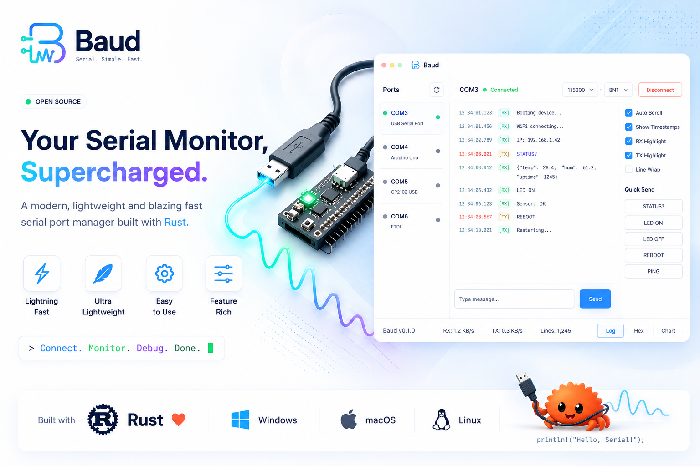

A modern, lightweight, blazing-fast serial terminal for debugging IoT devices.



The image above shows the direction Baud is headed. The Features section below lists exactly what's implemented today.
Why Baud?
Every time I needed to debug an ESP32 or Arduino over serial, I went looking for a decent open-source serial monitor and came away frustrated — bloated Electron apps, terminals that didn't remember basic things like timestamps, or tools that just felt like an afterthought bolted onto something else.
So I built the one I wanted: a native, single-purpose serial terminal in Rust. No Electron, no bundled runtime, no unnecessary features — just fast startup, a small binary, and a clean way to watch your device talk.
Features (v0.1)
- Auto-detected COM ports — pick from a live-scanned list, with a manual refresh button for devices plugged in after launch
- Standard + custom baud rates — 9600 through 230400 in a dropdown, or select "Custom" to enter any rate your device needs
- Live terminal view — streamed serial output rendered as it arrives, with autoscroll you can pause to read back through history
- Optional per-line timestamps — toggle
[HH:MM:SS.mmm]prefixes on or off - Configurable line endings on send — None /
\n/\r/\r\n, so you can match whatever your firmware expects - Dark and light themes
- Non-blocking I/O — serial reads happen on a background thread, so the UI never freezes regardless of baud rate or a silent device
Roadmap
Baud is early. Things planned but not yet built:
- Hex view / binary inspection
- RX/TX color highlighting and line wrap toggle
- Saving terminal output to a log file
- Quick-send command macros
- Auto-reconnect on device replug
Contributions and feature requests are welcome — see Contributing.
Install
Prebuilt binaries for Windows, macOS, and Linux are published on the Releases page for every version. Download the archive for your platform, extract it, and run the baud (or baud.exe) binary — no installer required.
Building from source
Requires a Rust toolchain with edition 2024 support (Rust 1.85+).
git clone https://github.com/bkrajendra/Baud.git
cd Baud
cargo build --releaseOn Linux, the build additionally needs the following system packages (Debian/Ubuntu names shown; adjust for your distro):
sudo apt-get install -y libudev-dev libxkbcommon-dev libgtk-3-devThe compiled binary is at target/release/baud (target\release\baud.exe on Windows).
Usage
- Plug in your device and launch Baud.
- Pick its port from the Port dropdown (click Refresh if it just appeared) and select a Baud rate — 115200 covers most ESP32/Arduino boards.
- Click Connect. Output starts streaming into the terminal pane.
- Type into the bottom input bar and press Enter (or click Send) to write back to the device. Pick the line ending your firmware expects from the dropdown next to it.
- Click Disconnect when you're done — the port is released immediately so you can reflash the device or reconnect elsewhere.
Contributing
Issues and pull requests are welcome. If you're proposing a larger change, please open an issue first to discuss the approach.
License
Baud is licensed under the MIT License.